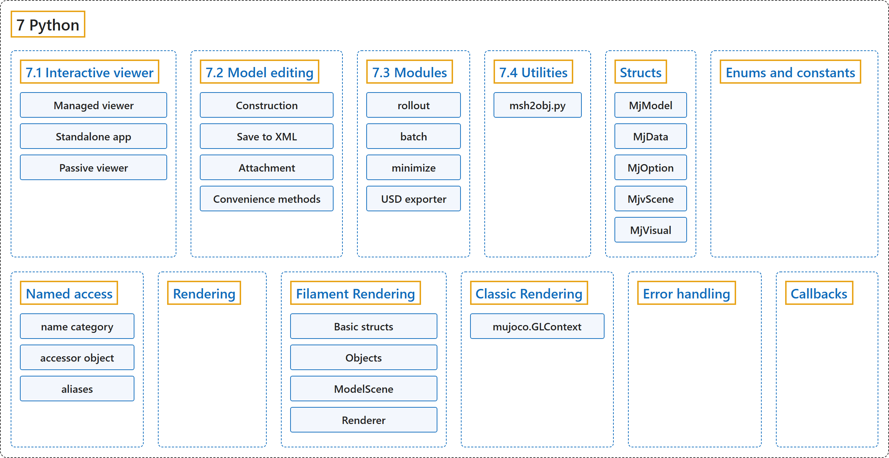

7. Python
Classification

Glossary
| Term | Definition | 中文翻译 | Source |
|---|---|---|---|
| 7 Python Python |
"MuJoCo comes with native Python bindings that are developed in C++ using pybind11." | MuJoCo 自带用 pybind11 在 C++ 中开发的原生 Python 绑定。 | Google DeepMind, n.d., "Python", para. 1 |
| 7.1 Interactive viewer 交互式查看器 |
"An interactive GUI viewer is provided as part of the Python package in the mujoco.viewer module." | 一个交互式图形界面查看器作为 Python 包的一部分，在 mujoco.viewer 模块中提供。 | Google DeepMind, n.d., "Interactive viewer", para. 1 |
| 7.2 Model editing 模型编辑 |
(No definition) | （无定义） | Google DeepMind, n.d., "Model editing" |
| 7.3 Modules 模块 |
(context) "The mujoco package contains two sub-modules: mujoco.rollout and mujoco.minimize" | （语境）mujoco 包包含两个子模块：mujoco.rollout 和 mujoco.minimize | Google DeepMind, n.d., "Modules", para. 1 |
| 7.4 Utilities 工具脚本 |
(context) "The python/mujoco directory also contains utility scripts." | （语境）python/mujoco 目录中还包含工具脚本。 | Google DeepMind, n.d., "Utilities", para. 1 |
| Structs 结构体 |
"The bindings include Python classes that expose MuJoCo data structures." | 绑定包含提供 MuJoCo 数据结构的 Python 类。 | Google DeepMind, n.d., "Structs", para. 1 |
| MjModel MjModel 类 |
(context) "The mujoco.MjModel class does not have a Python constructor. Instead, we provide three static factory functions that create a new mjModel instance: mujoco.MjModel.from_xml_string, mujoco.MjModel.from_xml_path, and mujoco.MjModel.from_binary_path." | （语境）mujoco.MjModel 类没有 Python 构造函数。取而代之，我们提供三个创建新 mjModel 实例的静态工厂函数：mujoco.MjModel.from_xml_string、mujoco.MjModel.from_xml_path 和 mujoco.MjModel.from_binary_path。 | Google DeepMind, n.d., "Structs", para. 5 |
| MjData MjData 类 |
(context) "In order to conform to PEP 8 naming guidelines, struct names begin with a capital letter, for example mjData becomes mujoco.MjData in Python." | （语境）为了符合 PEP 8 命名规范，结构体名称以大写字母开头，例如 mjData 在 Python 中变为 mujoco.MjData。 | Google DeepMind, n.d., "Structs", para. 2 |
| MjOption MjOption 类 |
"For structs that have an mj_defaultFoo-style initialization function, the Python constructor calls the default initializer automatically, so for example mujoco.MjOption() creates a new mjOption instance that is pre-initialized with mj_defaultOption." | 对于有 mj_defaultFoo 式初始化函数的结构体，Python 构造函数会自动调用默认初始化函数，例如 mujoco.MjOption() 创建一个用 mj_defaultOption 预先初始化的新 mjOption 实例。 | Google DeepMind, n.d., "Structs", para. 3 |
| MjvScene MjvScene 类 |
"Structs with a mj_makeFoo-style initialization function have corresponding constructor overloads in Python, for example mujoco.MjvScene(model, maxgeom=10) in Python creates a new mjvScene instance that is initialized with mjv_makeScene(model, [the new mjvScene instance], 10) in C." | 有 mj_makeFoo 式初始化函数的结构体在 Python 中有相应的构造函数重载，例如 Python 中的 mujoco.MjvScene(model, maxgeom=10) 创建一个新的 mjvScene 实例，它在 C 中用 mjv_makeScene(model, [新的 mjvScene 实例], 10) 初始化。 | Google DeepMind, n.d., "Structs", para. 4 |
| MjVisual MjVisual 类 |
(context) "Likewise, the sub-struct attributes of MjModel (opt, vis, stat) and MjVisual (global_, quality, headlight, map, scale, rgba) can be assigned to, for example model.opt = new_opt, which copies the fields of new_opt into the model’s own mjOption struct in place." | （语境）同样，MjModel 的子结构体属性（opt、vis、stat）和 MjVisual 的子结构体属性（global_、quality、headlight、map、scale、rgba）可以被赋值，例如 model.opt = new_opt，它把 new_opt 的字段就地复制到模型自己的 mjOption 结构体中。 | Google DeepMind, n.d., "Structs", para. 6 |
| Enums and constants 枚举与常量 |
(context) "MuJoCo enums are available as mujoco.mjtEnumType.ENUM_VALUE, for example mujoco.mjtObj.mjOBJ_SITE." | （语境）MuJoCo 枚举以 mujoco.mjtEnumType.ENUM_VALUE 的形式提供，例如 mujoco.mjtObj.mjOBJ_SITE。 | Google DeepMind, n.d., "Enums and constants", para. 1 |
| Named access 按名称访问 |
"For convenience and code readability, the Python bindings provide “named access” API on MjModel and MjData." | 为了方便和代码可读性，Python 绑定在 MjModel 和 MjData 上提供“按名称访问”API。 | Google DeepMind, n.d., "Named access", para. 1 |
| name category 名称类别 |
"Each name_fooadr field in the mjModel struct defines a name category foo." | mjModel 结构体中的每个 name_fooadr 字段定义一个名称类别 foo。 | Google DeepMind, n.d., "Named access", para. 1 |
| accessor object 访问器对象 |
"The accessor object contains attributes whose names correspond to the fields of either mujoco.MjModel or mujoco.MjData but with the part before the underscore removed." | 访问器对象包含一些属性，其名称对应 mujoco.MjModel 或 mujoco.MjData 的字段，但去掉了下划线之前的部分。 | Google DeepMind, n.d., "Named access", para. 2 |
| aliases 别名 |
"Additionally, the Python API define a number of aliases for some name categories corresponding to the XML element name in the MJCF schema that defines an entity of that category." | 此外，Python API 为某些名称类别定义了若干别名，对应 MJCF 模式中定义该类别实体的 XML 元素名。 | Google DeepMind, n.d., "Named access", para. 3 |
| Rendering 渲染 |
(context) "MuJoCo provides two rendering APIs: the classic rendering API (which uses OpenGL 1.5) and the filament rendering API (which provides more modern physically-based rendering capabilities)." | （语境）MuJoCo 提供两套渲染 API：经典渲染 API（使用 OpenGL 1.5）和 Filament 渲染 API（提供更现代的基于物理的渲染能力）。 | Google DeepMind, n.d., "Rendering", para. 1 |
| Filament Rendering Filament 渲染 |
"The Python mjrf module exposes the mjrf_ C API to python." | Python 的 mjrf 模块把 mjrf_ C API 提供给 Python。 | Google DeepMind, n.d., "Filament Rendering", para. 1 |
| Basic structs 基本结构体 |
"Basic structs (e.g. mjrRect, mjrCamera, etc.) are considered to be simple POD data types and are bound directly as python types allowing copies to be made as needed." | 基本结构体（例如 mjrRect、mjrCamera 等）被视为简单的 POD 数据类型，直接绑定为 Python 类型，可以按需复制。 | Google DeepMind, n.d., "Filament Rendering", item 3 |
| Objects 对象 |
"mjrf types that have explicit create/destroy functions in the C API (e.g. mjrfContext, mjrfTexture, etc.) are treated as “Objects”." | 在 C API 中有显式创建或销毁函数的 mjrf 类型（例如 mjrfContext、mjrfTexture 等）被当作“对象”。 | Google DeepMind, n.d., "Filament Rendering", item 4 |
| ModelScene ModelScene 类 |
"We also provide a ModelScene helper class under mujoco.rendering.filament. This class can be used to add and update mjrfRenderable and mjrfLight objects in an mjrfScene based on the contents of an mjModel and mjData." | 我们还在 mujoco.rendering.filament 下提供 ModelScene 辅助类。这个类可用来根据 mjModel 和 mjData 的内容，在 mjrfScene 中添加和更新 mjrfRenderable 与 mjrfLight 对象。 | Google DeepMind, n.d., "Filament Rendering", para. 2 |
| Renderer Renderer 类 |
"Similarly, we also provide a Renderer class under mujoco.rendering.filament. This class can be used to manage the lifetimes of key objects (such as the mjrfContext and mjrfScene) and provides useful functions for controlling the camera and reading pixels." | 类似地，我们还在 mujoco.rendering.filament 下提供 Renderer 类。这个类可用来管理关键对象（如 mjrfContext 和 mjrfScene）的生命周期，并提供控制相机和读取像素的实用函数。 | Google DeepMind, n.d., "Filament Rendering", para. 3 |
| Classic Rendering 经典渲染 |
(context) "The MuJoCo classic renderer expects users to set up a working OpenGL context before calling any of its mjr_ rendering routines." | （语境）MuJoCo 经典渲染器要求用户在调用其任何 mjr_ 渲染例程之前建立一个可用的 OpenGL 上下文。 | Google DeepMind, n.d., "Classic Rendering", para. 1 |
| mujoco.GLContext mujoco.GLContext 类 |
"The Python bindings provide a basic class mujoco.GLContext that helps users set up such a context for offscreen rendering." | Python 绑定提供一个基础类 mujoco.GLContext，帮助用户为离屏渲染建立这样的上下文。 | Google DeepMind, n.d., "Classic Rendering", para. 1 |
| make_current() make_current() 方法 |
(context) "Once the context is created, it must be made current before MuJoCo rendering functions can be called, which you can do so via ctx.make_current()." | （语境）上下文创建之后，必须先把它设为当前上下文，才能调用 MuJoCo 渲染函数，可以通过 ctx.make_current() 完成。 | Google DeepMind, n.d., "Classic Rendering", para. 1 |
| free() free() 方法 |
(context) "The context is freed automatically when the ctx object is deleted, but in some multi-threaded scenario it may be necessary to explicitly free the underlying OpenGL context." | （语境）删除 ctx 对象时上下文会自动释放，但在某些多线程场景中，可能需要显式释放底层的 OpenGL 上下文。 | Google DeepMind, n.d., "Classic Rendering", para. 2 |
| Error handling 错误处理 |
"The Python bindings utilizes longjmp to allow it to convert irrecoverable MuJoCo errors into Python exceptions of type mujoco.FatalError that can be caught and processed in the usual Pythonic way." | Python 绑定利用 longjmp，把不可恢复的 MuJoCo 错误转换为 Python 异常（类型为 mujoco.FatalError），可以按通常的 Python 方式捕获和处理。 | Google DeepMind, n.d., "Error handling", para. 2 |
| Callbacks 回调 |
"MuJoCo allows users to install custom callback functions to modify certain parts of its computation pipeline." | MuJoCo 允许用户安装自定义回调函数，以修改其计算流水线的某些部分。 | Google DeepMind, n.d., "Callbacks", para. 1 |
References
Google DeepMind. (n.d.). Python. MuJoCo Documentation (Version 3.17.0). Retrieved October 31, 2026, from https://mujoco.readthedocs.io/en/stable/python.html